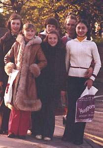

Maria Filatova (USSR)
1977 and 1978 World Cup AA
Champion
1980 Olympic UB Bronze Medalist
1981 World
AA Silver Medalist
|
 Filatova
(center front) flanked by
Elena Davydova and Svetlana Grozdova.
Medal Total
- Olympic Games: 2 Gold, 1
Bronze
- World Championships: 2
Gold, 2 Silver
- World Cup: 4 Gold, 3
Silver
- European Championships: 1
Gold, 1 Bronze
|
Maria was born on July 19, 1961
in Leninsk-Kuznetsk. She began gymnastics at age 5, after asking her father to take her to the gym. Her coaches were Galina and Innokenty Mametyev.
One of Maria's first international competitions was the 1975 Chunichi Cup, where
she astounded the spectators and judges alike by performing a double back
somersault on FX. She was the smallest athlete at the 1976 Olympics (and
she was originally the team alternate, but an outstanding showing during podium
training in Montreal made the coaches change their minds about her). Maria
won the World Cup twice -- in 1977 and 1978 -- but her greatest triumph was winning the silver AA medal at the 1981 World Championships, her last major
competition.
A 1984 graduate of Novosibirsk State Pedagogical Institute, Maria became a coach and judge, performed in
the circus for a while, and married tumbler Alexander Kurbatov. The pair
coached in Belfast for a few years before moving to the USA in 1996. In 1999, she was awarded the title of Honorary Citizen of her hometown. She's recognized as the best athlete of the 20th century in the Kuznetsk Basin.
Maria, Alexander, and daughter Sasha (a former Level 10 gymnast who became a coach/choreographer) owned and operated a gym in Rochester, NY, for many years.
In 2014, Maria returned to Russia in an effort to regain her Russian citizenship, which was granted the following year. Her husband joined her there. Daughter Sasha remains in the Rochester area, and has two children (daughter Gemma and son Gryffin) with her partner.
Maria currently works as a coach in Leninsk-Kuznetsk.
- Competition Results
- 1974
Jr. RSFSR-BUL: 1st Team, 3rd AA, 1st UB
Schoolchildren's Spartakiad: 1st B (Candidate for Master)
- 1975
- All-Union Gymnastics Championships in the
Separate Events: 1st B, 1st FX
Chunichi Cup: 5th AA
- Druzhba: 3rd AA
GDR-USSR Dual Meet: 1st Team, 4th AA, 2nd V, 2nd UB, 3rd FX
- JPN-USSR Dual Meet: 1st Team, 2nd AA
Jr. USSR Championships: 2nd AA
- USSR-ROM Dual Meet: 1st Team, 3rd AA
- Milk Meet: 2nd AA
Tokyo Cup: 1st V
-
- 1976
Championships of Specialized Sports Schools: 1st AA
Jr. USSR Championships: 3rd AA
- Moscow News: 2nd AA, 1st V, 2nd UB, 2nd
B, 2nd FX
- Olympic Games: 1st Team, 9th AA (prelims)
Riga International: 1st AA, 1st FX, 2nd V, 2nd UB
USSR-CSSR Dual Meet: 1st Team, 2nd AA, 1st V, 1st UB, 1st B
- USSR Cup: 5th AA
- USSR Championships: 4th AA, 6th V, 6th UB, 3rd
B
-
- 1977
- European Championships: 1st FX, 3rd B,
4th V, 5th AA, 6th UB
- Moscow News: 1st AA, 1st FX, 1st B, 2nd UB, 3rd V
- Paris Grand Prix: 1st AA, 1st UB, 1st B, 1st FX, 2nd V
- Riga International: 1st AA
- USSR Championships: 1st AA, 1st B, 2nd
FX, 6th V
- USSR Cup: 4th AA
- World Cup: 1st AA, 1st FX, 2nd V, 2nd UB,
5th B
-
- 1978
- Moscow News: 1st UB, 1st B, 2nd AA, 2nd V
RSFSR Championships: 2nd AA, 1st V, 1st FX
Spartakiade of RSFSR Sports Schools: 1st Team, 1st AA, 1st B, 1st FX, 2nd V, 2nd UB
- USSR-GDR Dual Meet: 1st Team, 1st AA
- USSR Championships: 5th AA, 1st B, 1st FX, 5th
V, 6th UB
USSR Cup: 1st AA
- USSR Schoolchildren's Spartakiad: 1st Team, 2nd AA
- World Championships: 1st Team,
4th UB
- World Cup: 1st AA, 1st FX, 4th V, 5th
UB
-
- 1979
- Paris Grand Prix: 1st AA, 1st V, 1st FX, 3rd B
- Riga International: 1st AA, 1st V, 1st B, 1st FX
University Games: 1st Team, 2nd AA, 1st
V, 1st UB, 1st FX
- USSR Championships: 2nd AA, 2nd B, 4th
UB, 8th FX
- USSR Spartakiade: 1st Team, 4th AA
- World Championships: 2nd Team,
4th AA, 5th B, 5th FX, 7th UB
- World Cup: 12th AA
-
- 1980
- Olympic Games: 1st Team, 7th AA
(prelims), 3rd UB
- Riga International: 3rd AA, 3rd UB, 3rd
B
RSFSR Championships: 1st AA, 1st V, 1st UB, 1st B
- USSR Cup: 5th AA
- World Cup: 13th AA, 2nd B
-
- 1981
- Antibes International: 2nd AA, 3rd FX
- Orleans International: 4th AA
- University Games: 2nd Team, 4th B, 4th UB, 5th AA, 5th
FX
USSR Championships: 8th AA
- World Championships: 1st Team, 2nd AA,
6th B
1982
USSR Championships: 2nd Team, 9th AA (prelims)
- This page was created on November 1, 1997 and was last
updated on August 20, 2026.
© Gymn
Forum